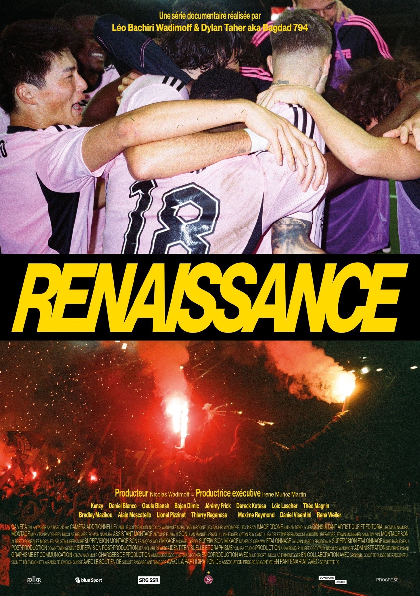
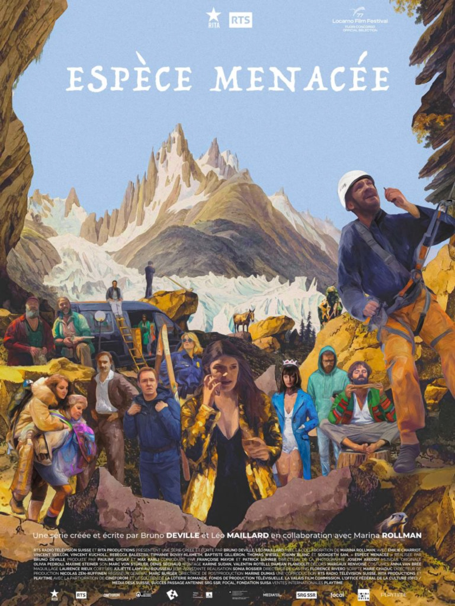

Films
Les films post-produits chez Downtown Studio, avec ce qui a été fait ici et par quel résident. La filmographie commence [À VALIDER : date de référence de la maison (2004 sous le nom Freestudios, 2022 ou 2024)].

Le Procès du chien
Long métrageIci : son, image

Gloria!
Long métrageIci : son

Desire
DocumentaireIci : son, image

Winter Palace
Série · 8 épisodesIci : son, effets visuels

Renaissance
Série documentaire · 4 épisodesIci : image, son

Espèce menacée
Série · 6 × 45 minIci : image, effets visuels
07À bras-le-corps
Cinéma
Suisse, 1943. Une adolescente remet en question la morale de son village, qui refoule des réfugiés français. Après un drame personnel, elle doit trouver le courage de tracer sa propre voie.
08A Thousand Fires
Cinéma
Dans la région de Magway, au Myanmar, Thein Shwe et Htwe Tin exploitent un petit champ de pétrole et produisent un baril tous les quelques jours. Ils espèrent que leur fils cadet sortira de la pauvreté.
09Allégorie citadine
Cinéma
Dans l'allégorie de la caverne, Platon se demande ce qui arriverait si un prisonnier se libérait de ses chaînes. Et si ce prisonnier était Jay, un garçon de 7 ans ?
10Ariaferma
Cinéma
Les derniers gardiens et quelques détenus d'une prison attendent leur transfert. Les règles perdent peu à peu leur sens, et ces hommes forment une communauté fragile.
11Bulle
Cinéma
À Bulle, petite ville suisse, la vie de la famille Aubert vole en éclats quand Alice, 35 ans, tombe malade.
12Ceux qui rougissent
Cinéma
Post-produit par Cinetic Creatives, résident fondateur.
13Favolacce
Cinéma
Quelques familles vivent en marge, dans la banlieue de Rome. Les tensions peuvent éclater à tout moment, et ce sont les enfants qui provoquent l'effondrement.
14Gabin
Cinéma
Le film suit pendant dix ans un garçon tiraillé entre la loyauté familiale et son désir de liberté, qui cherche à quitter son milieu ouvrier dans la campagne du nord de la France.
15Hors saison
Cinéma
Mathieu vit à Paris, Alice dans une petite ville au bord de la mer. Après une courte liaison, chacun suit son chemin. Venu soigner sa mélancolie dans une thalasso, Mathieu y retrouve Alice par hasard.
16Intraçables
Cinéma
Giulia a perdu son mari David il y a sept ans. Un inconnu monte dans son taxi et ravive des souvenirs oubliés. Avec son fils de 17 ans, elle doit fuir et disparaître des réseaux. La vérité se trouve dans le passé de David.
17La Beauté de l'âne
Cinéma
Après cinquante ans d'exil de son père, une cinéaste retourne avec lui à Makermal, au Kosovo, vingt-cinq ans après la guerre, pour un film qui mêle ses souvenirs d'enfance et une quête de vérité.
18La Cache
Cinéma
Un garçon de dix ans vit Mai 68 caché chez ses grands-parents, entouré de ses oncles et de son arrière-grand-mère, autour d'une mystérieuse cachette. D'après le roman de Christophe Boltanski.
19La Chimère
Cinéma
Tout juste sorti de prison, Arthur, archéologue anglais, retrouve sa bande de pilleurs de tombes étrusques, qui vivent de la revente des trésors qu'ils déterrent.
20La Dérive des continents
Cinéma
En mission pour l'Union européenne en Sicile, Nathalie Adler prépare la visite de Macron et Merkel dans un camp de migrants. Son fils Albert, militant d'une ONG qu'elle n'a pas vu depuis des années, arrive sans prévenir.
21La Mif
Cinéma
Des adolescentes placées dans un foyer forment avec leurs éducatrices une famille imposée, faite de tensions et de complicités, jusqu'à ce qu'un incident déclenche une série de réactions.
22Laundry
Cinéma
En Afrique du Sud, sous l'apartheid, les ambitions musicales d'un jeune homme se heurtent à la survie de la blanchisserie familiale, alors que la discrimination envers les entrepreneurs noirs s'intensifie.
23Lazzaro felice
Cinéma
Un paysan italien d'une bonté inaltérable et sa famille sont exploités par une baronne du tabac.
24Le Vent tourne
Cinéma
Pauline, jeune agricultrice, élève ses bêtes loin du monde moderne. L'arrivée de Samuel, venu installer une éolienne sur la ferme, met à l'épreuve ses valeurs et son amour pour Alex.
25O vento assobiando nas gruas
Cinéma
Algarve, fin des années 1990. Après la mort de sa grand-mère, Milene partage sa vie entre sa famille de notables et une famille cap-verdienne qui la soutient, sur fond d'histoire récente du Portugal.
26L'Ofrena
Cinéma
Hanté par un profond sentiment de culpabilité, Jan tente de reconquérir Violeta, un amour de jeunesse perdu il y a vingt ans, par un plan inquiétant.
27Peau à peau
Cinéma
Une jeune mère en proie à la dépression post-partum et à l'insomnie est de plus en plus hantée par la mort de sa sœur, alors qu'elle s'occupe de son nouveau-né.
28Rivière
Cinéma
Manon, 17 ans, quitte les Alpes suisses à la recherche de son père disparu. Elle poursuit son rêve de devenir hockeyeuse professionnelle et tombe amoureuse pour la première fois.
29Sauve qui peut
Cinéma
Post-produit par Cinetic Creatives, résident fondateur.
30Say God Bye
Cinéma
Inspiré par Jean-Luc Godard au bord du Léman, un jeune cinéaste finit par rencontrer son idole pour lui dire simplement « Merci, JLG ».
31The Arab
Cinéma
Haroun est un vieil homme qui garde un secret incroyable.
32Until Branches Bend
Cinéma
Une ouvrière enceinte d'une conserverie découvre dans une pêche ce qu'elle croit être un insecte invasif, et doit convaincre sa communauté du danger.
33L'Étincelle
Cinéma
Dix ans après l'occupation d'un bocage près de Nantes contre un projet d'aéroport, le film fait le portrait des militants de la zone à défendre au moment de leur première victoire : l'abandon du projet.
Votre film est le prochain ?
Le fonds incitatif genevois rembourse jusqu'à 30 % des dépenses de post-production faites à Genève.